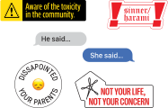
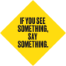
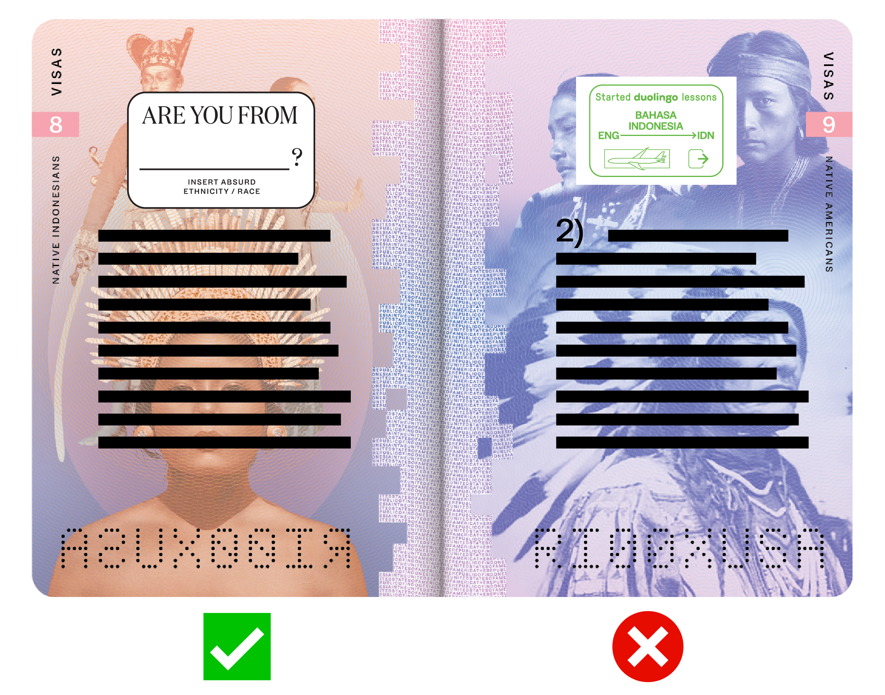

Thank you for participating in this project. Feel free to enjoy and appreciate the passport with all its details before you write on it.
Please read through all the information on this page before working on the book!
Deliverables
For this passport, I ask you to answer the following questions directly
into the book with a pen.
DO NOT REWRITE THE QUESTIONS into the book, rather, use the selection
of stickers included into this kit to denote which question you will be
answering. Each sticker corresponds to a question, check the chart below.
Place these stickers at the top of the page before you start writing.
Place as many stickers as you want or to as many as you relate to. Be as
expressive and in-depth as you can based on your own personal experience.
Be minddful that there is a limited amount of spaace in the book.
Feel free to incorporate other things into the book: pictures, poems, coffee
stains, etc., that best relfelct what you want to covey your experience on top
of the written statements.
Completion
Upon the completion of your responses, scan each of your spreads you wrote on.
Scan them to the size of the scanner bed (do not crop it to the size of the
passport). Make sure all your scan resolutions is at 600 dpi. Place all your
scans into a folder and share it or email it to me at:
LUAWD369@newschool.edu
If you do not habe a scanner at home, let me know and we can find an alternative
way to document the book.
Thanks again,
Dirm
Questions
Stickers
Do's and Don'ts
① What is your definition of an Indonesian-American?
② Do you think Indonesian-Americans have renounced or even suppressed their Indonesian identity?
③ Why do you think Indonesian-Americans have not explored their Indonesian identity? Take into consideration the complexities that lie within, such as religion, orientation, gender, etc.
④ Do you feel like you have to live up to a certain expectaion? Is it infulenced culture? Society?

⑤ What stuggles do you face when you go back to Indonesia? If you've never been to Indonesia or haven't been back in a while, what do you expect if you did go?
⑥ Who are you? Ethnicity, religion, race(s), age, profession, gender, sexuality, etc. (Do not write your name, keep it anonymous, unless you want to)
⑦ Do you have anything you would like to add to this conversation?


If you fill out any of the blank information on these pages, DO NOT send me the scans for these pages, I do not want any of your information, I am soley interested in your responses, which start on page 8.

DO cut the stickers out to the shape to your best ability, the placement of which on the page does not matter, as long as you respond to the question around or below the sticker.
DO NOT leave the stickers as is. DO NOT also write the number of the questions, please use the stickers!
If you run into any troubles or have any questions, feel free to DM me on instagram or shoot me an email at LUAWD369@newschool.edu